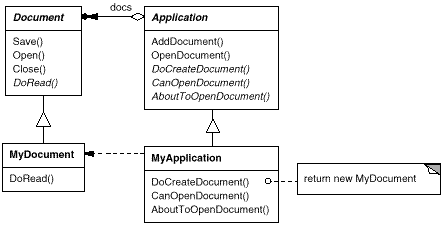
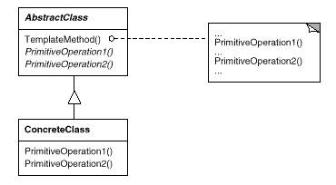

void Application::OpenDocument (const char* name) {
if (!CanOpenDocument(name)) {
// cannot handle this document
return;
}
Document* doc = DoCreateDocument();
if (doc) {
_docs->AddDocument(doc);
AboutToOpenDocument(doc);
doc->Open();
doc->DoRead();
}
}

void DerivedClass::Operation () {
// DerivedClass extended behavior
ParentClass::Operation();
}
void ParentClass::Operation () {
// ParentClass behavior
HookOperation();
}
void ParentClass::HookOperation () { }
void DerivedClass::HookOperation () {
// derived class extension
}
void View::Display () {
SetFocus();
DoDisplay();
ResetFocus();
}
void View::DoDisplay () { }
void MyView::DoDisplay () {
// render the view's contents
}